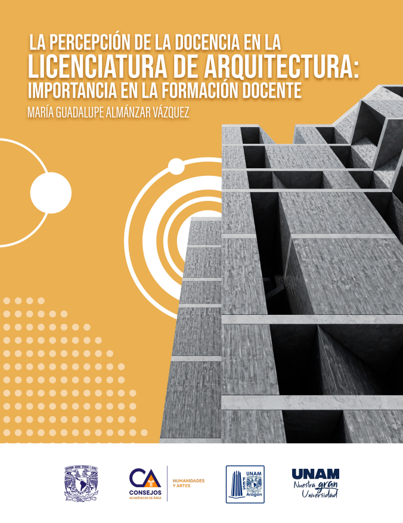

Diseño en Conjunto
Primer Encuentro de Diseño de la UNAM
Reseña
El Comité Académico de la Carrera de Diseño, que sesiona en este consejo desde 2013, se caracteriza por ser un comité plural que integra las distintas carreras de diseño en nuestra universidad: Artes y Diseño de la ENES Morelia, Diseño y Comunicación Visual de la FAD y de FES Cuautitlán, en donde además se imparte a distancia; Diseño Gráfico de FES Acatlán y Diseño Industrial del CIDI/Facultad de Arquitectura y FES Aragón.
A lo largo de las sesiones del trabajo del Comité se han abordado distintos temas como perfiles de ingreso, movilidad, planes de estudio, tecnologías de la información y la comunicación, etcétera; sin embargo, surgió la necesidad de indagar en torno a los fundamentos teóricos del diseño en sus diversas vertientes y reflexionar sobre los procesos de formación profesional de los diseñadores, por lo que se organizó este Primer Encuentro de Diseño de la UNAM.
Es así como este encuentro tiene como propósito instaurar un foro de reflexión e intercambio en torno a la conceptualización, experiencias y propuestas relacionadas a la enseñanza de diseño en la UNAM, y su vinculación con el campo profesional en el ámbito nacional e internacional, así como su impacto en los planes de estudio.

La Percepción de la Docencia en la Licenciatura de Arquitectura
FES Aragón
Reseña
El texto tiene la intención de presentar la percepción que se tiene sobre la docencia en la Licenciatura de Arquitectura de la FES Aragón para destacar la importancia de la formación docente.
Durante el proceso de diagnóstico para la actualización del Plan de Estudios de la licenciatura en Arquitectura se realizó un “sondeo” para conocer la concepción de docencia de las y los profesores. De los resultados destacan tres nociones que caracterizan la idea que se tiene.
La docencia como profesión implica reconocer que se requiere de “cierto perfeccionamiento” de conocimientos, habilidades y actitudes a partir de una reflexión y de un proceso formativo para desarrollar la práctica docente eficaz y eficientemente en el mejoramiento del proceso de enseñanza y de aprendizaje considerando el contexto institucional y social en el que se realiza.

El impacto de la IA en la enseñanza de la arquitectura
Consejo Académico del Área de las Humanidades y de las Artes
Reseña
Los avances tecnológicos han transformado la vida actual, en el ámbito virtual y las comunicaciones en general, la incorporación de la Inteligencia Artificial ha provocado un cambio radical en el manejo de la información, comunicación y la educación.
Nos preguntamos qué hacer sobre los problemas que generan estos cambios tecnológicos, cómo afectan al aprendizaje significativo en la utilización de diversos softwares: a) el análisis de un gran número de datos, b) el uso de patrones del espacio arquitectónico y de las características geográficas (SIGS) donde se ubican los elementos a realizar, c) la simulación y el modelado como el CAD, 3D; todos ellos aspectos que ayudan al estudiante a crear y recrear el espacio para poder evaluar distintas alternativas. Las plataformas nos permiten también el trabajo conjunto, compartiendo el conocimiento y experiencias de personas de varias disciplinas.
Sin embargo, todas ellas son herramientas; en la enseñanza de la arquitectura, debemos considerar y no perder de vista la importancia del aprendizaje significativo y el pensamiento crítico del alumno.